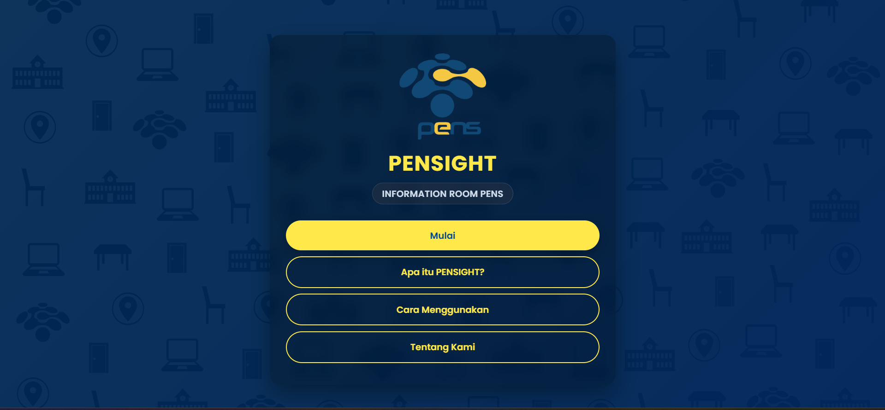
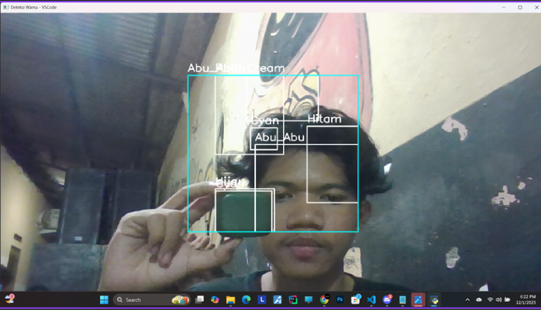

Semester 3
Proyek Multimedia Interaktif Proyeksi video Mapping
Proyek *Video Mapping* ini dirancang khusus untuk memetakan dan memproyeksikan animasi visual bertema perjuangan pahlawan nasional pada fasad arsitektur.
Implementasi Teknis:
- Perangkat Lunak & Projection Mapping: Menggunakan software industri Resolume Arena untuk kalkulasi presisi *warping*, alignment, dan pemetaan output video sesuai geometri fisik gedung 3D.
Produksi Film Animasi Pendek 3D:
Film pendek animasi 3D bertajuk "cinta dalam diam" memiliki tema psikologi gelap yang berfokus pada obsesive berlebihan. Terdapat 5 karakter utama: Clara, Yoru, Juan, Karina, dan pak guru.
Peran & Teknikal Animasi:
- 3D Character & Environment Modeling: Perancangan aset lingkungan kelas dan pemodelan karakter unik.

Aplikasi Navigasi & Informasi Ruangan Berbasis Augmented Reality (AR):
PENSIGHT merupakan platform aplikasi AR interaktif yang dikembangkan untuk mempermudah civitas akademika (mahasiswa, dosen) serta tamu luar dalam memindai, mengenali, dan menavigasi gedung dan laboratorium di lingkungan kampus PENS.
Fitur Utama & Implementasi Teknologi:
- Marker-Based AR Tracking: Cukup dengan mengarahkan kamera ke penanda tertentu, sistem secara otomatis merender *overlay* objek 3D serta pop-up informasi fasilitas ruang secara real-time.
- Informasi Terpadu: Menampilkan identitas ruang, fungsi laboratorium, daftar fasilitas, hingga jajaran pengelola/laboran.

Sistem Pengolahan Citra Digital & Object Tracking Real-Time:
Perancangan perangkat lunak pendeteksi dan pengidentifikasi warna objek secara *real-time* memanfaatkan masukan video langsung dari webcam dengan bahasa pemrograman Python dan library OpenCV.
Keunggulan Algoritma & Fitur Sistem:
- Konversi Ruang Warna HSV (Hue, Saturation, Value): Dipilih karena lebih memiliki ambang batas (*thresholding*) yang stabil terhadap intensitas kecerahan dan perubahan cahaya sekitar dibandingkan ruang warna standar RGB.
- Multi-Color Tracking: Mampu mengenali spektrum warna luas (Merah, Hijau, Biru, Kuning, Oranye, Cokelat, dll.).
- Real-Time Bounding Box & Labeling: Apabila objek sesuai dengan rentang batas HSV, program secara otomatis menggambarkan kotak pembatas (*bounding box*) dan menuliskan label nama warna tepat di atas objek secara dinamis.